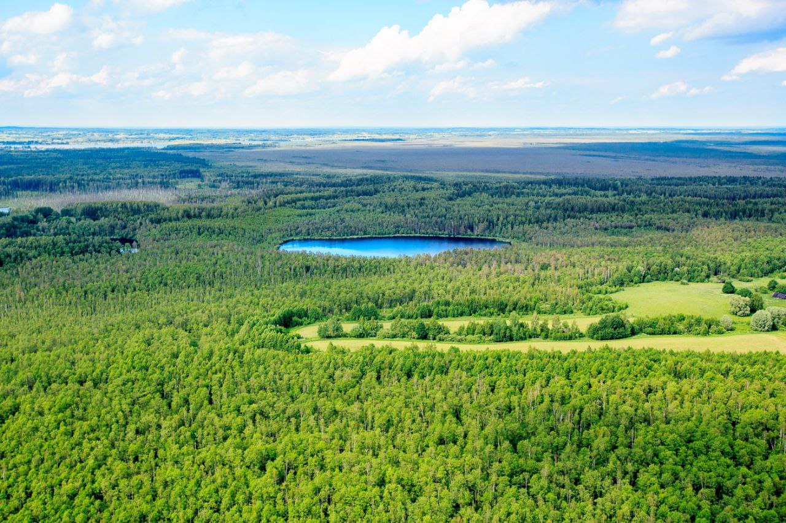
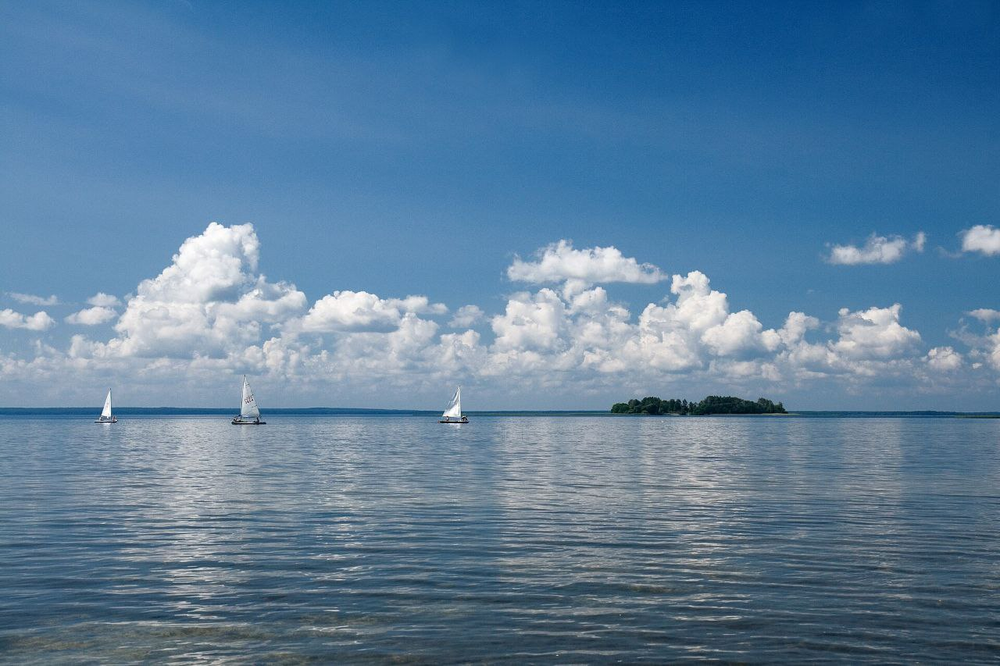
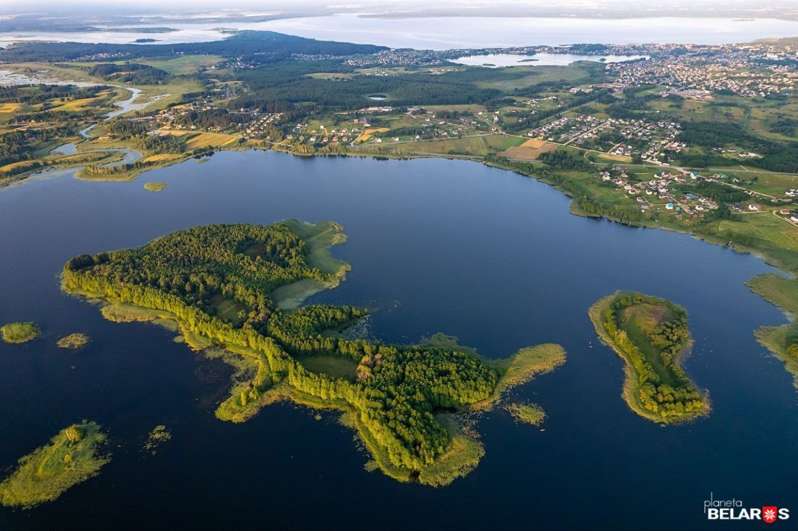
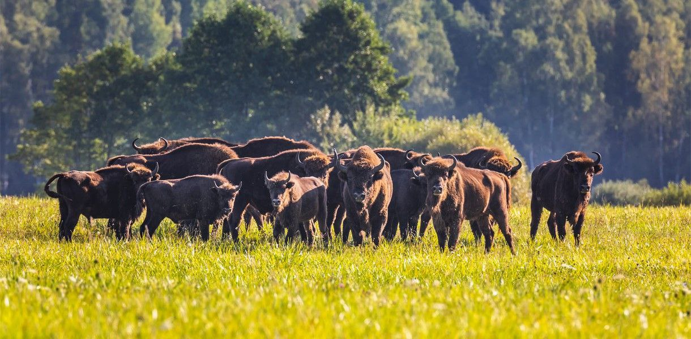

Reich und vielfältig ist die Natur von Belarus. Landschaftlich ist die Republik ein hügeliges Tiefland mit vielen Flüssen und Seen, dichten Wäldern und weiten Wiesen. Auf dem Territorium der Republik fließen mehr als 20000 Flüsse. Die größten Flüsse sind der Dnepr, die Westliche Dwina, der Pripjat, der Neman, der Bug, die Beresina, die Sosh. Schön und vielfältig ist auch die Pflanzen- und Tierwelt. Die Wälder nehmen ein Drittel der Fläche von Belarus ein. Es gibt viele Mischwälder.
In belarussischen Wäldern wachsen 28 Baumarten und 70 Sträucherarten1. In Belarus wachsen hauptsächlich wertvolle Baumarten. Auf die Kiefern entfallen 52,9 %, Tannen 10,5 %, Eichen und andere Harthölzer – 3,8 %, Birken 18,1 %, Espen 2,3 %, Erlen 9,6 % der waldbedeckten Fläche. Die Wälder des Landes sind Quelle beträchtlicher Naturressourcen wie honigtragende Pflanzen, Heilkräuter, technische und andere nutzbare Pflanzen. Es werden in der Hauptsache Heidelbeeren, Moosbeeren, Preiselbeeren, Blaubeeren, rote Ebereschenbeeren gesammelt. In den Wäldern finden mehr als 280 Vogelarten ihr Zuhause und ungefähr 80 Tierarten. Doch der ganze Stolz der belarussischen Wälder ist natürlich der Wisent. Das ist das Wahrzeichen von Belarus. Dieser uralte Büffel ist das größte Wildtier Europas.
Sümpfe sind typisch für die belarussische Landschaft. Sie nehmen etwa 13% der Fläche der Republik ein. Im Süden der Republik, zwischen den Flüssen Bug und Prypjat liegt Polesje. Das ist eine flache Landschaft mit vielen Sümpfen und reicher Natur.

Belarus ist ein Land blauer Seen. Die Seen nennt man auch die blauen Augen des Landes. In der Republik gibt es etwa 11000 Seen. Besonders viele Seen liegen im Norden. Der größte See ist der Narotsch. Seine Fläche beträgt 80 Quadratkilometer, die größte Tiefe fast 25 Meter. Das Wasser des Sees ist so klar, dass man seinen Boden in 5 Metern Tiefe sehen kann. Im See leben 24 Fischarten. Heute ist der Narotsch der wichtigste Kurort unserer Republik. An seinen Ufern, in den Kieferwäldern, liegen Sanatorien und viele Ferienlager für die Kinder.

Im Nordosten der Republik befinden sich die malerischen Braslawer Seen. Es sind mehr als 30 große und kleine Seen. Die größten Seen sind Driswjaty, Driwjaty, Snudy, Woiso. Jeder See ist einzigartig. Die Wasserfläche der Seen beträgt insgesamt 183 km². Im See Strusto liegt die Insel Tschaitschin (1,6 km²) mit einem kleinen See in der Mitte. Viele Einwohner von Belarus, der Ukraine und Russland erholen sich gern hier.
In den Sümpfen von Polesje befindet sich der Tscherwonoje oder Fürstensee. Es gibt viele Legenden über diesen See. Eine Legende erzählt, dass der Sluzker Fürst mit seinem Sohn sehr unzufrieden war. Er baute in der Mitte des Sees ein Schloss und sperrte darin seinen Sohn. Einmal in der Nacht kam großes Gewitter. Es blitzte, donnerte. Der Sturm zerstörte das Schloss und der junge Mann ertrank im See. Seit dieser Zeit nennt man den See - Fürstensee.
Der Oswejasee ist der zweitgrößte See des Landes mit einer Fläche von 52,8 km². Er liegt in Werchnedwinsker Bezirk. Im See gibt es eine 5 km² große driftende Insel. Ein wirklich schönes Eckchen ist der Switjas-See. Seine Schönheit besang der große Dichter Adam Mickiewich, der hier geboren wurde.

Auf dem Territorium der Republik Belarus gibt es 2 staatliche Naturschutzgebiete und 4 Nationalparke. Im Südwesten der Republik, 340 km von Minsk entfernt, liegt der Nationalpark Beloweshskaja Puschtscha. Die Beloweshskaja Puschtscha ist ein altes Naturschutzgebiet. Man hat es 1939 gegründet. Die Fläche des Nationalparks beträgt etwa 90 Tausend Hektar und besteht aus Wald (88%), aus Sumpf (4%), aus Wiesen (5%). Heute gibt es im Nationalschutzpark 26 Baumarten.
Hier gibt es 200- bis 350jährige Kiefern bis 30 und mehr Meter hoch, hier wachsen 500-jährige Eichen. Mit ihrem Gesang erfüllen 216 Vogelarten die Luft. Sogar schwarze Störche kann man hier beobachten. Zu den seltenen Tierarten gehören Damhirsch und Edelhirsch, Elch und Reh, Biber und Bisamratte, Nerz und Iltis, Marder und Luchs. Das älteste und das größte Wildtier Europas, der Wisent hat in der Beloweshskaja Puschtscha seine Heimat. Wisente lebten früher in allen Zonen Europas und Asiens. Zu Beginn des letzten Jahrhunderts waren sie fast ausgestorben, weil man sie jagte und ihre Lebensräume, die Wälder, abholzte. Man schützte diese Tiere und heutzutage leben in Beloweshskaja Puschtscha mehr als 565 Tiere. Im Naturschutzpark wachsen 844 Pflanzenarten.
Andere Naturschutzgebiete sind das Polessische Staatliche Radioökologische Schutzgebiet, das Beresina Naturschutzgebiet, der Nationalpark Narotschsee, der Nationalpark Braslawer Seen, der Nationalpark Pripjat.
Das Klima von Belarus ist mild und feucht. In Belarus sind etwa 30 Arten von Mineralrohstoffen erkundet. Darunter nehmen Kalisalze einen besonderen Platz ein. Die Kalisalzvorräte sind in Belarus praktisch unerschöpflich. Das Land ist reich an Steinen und Erden: an Granit, Dolomit, Mergel und Kreide, Ton, Letten und Sandkies.
 Natur
Natur
 Wirtschaft
Wirtschaft
 Menschen
Menschen
 Geschichte
Geschichte
 Sehenswürdigkeiten
Sehenswürdigkeiten
 Kultur
Kultur